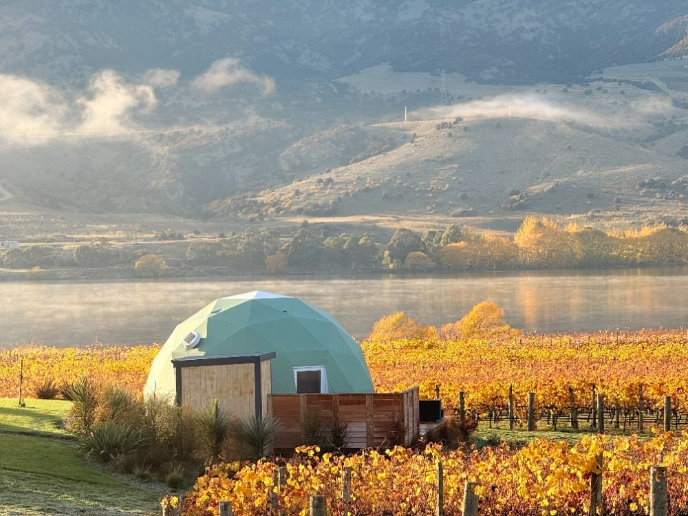
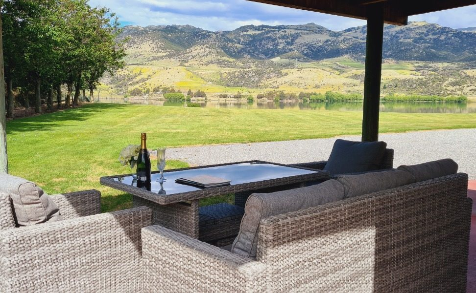

Discovering Central Otago Wine Country
Central Otago holds a special place in the world of wine. As New Zealand's southernmost wine region and the most southerly wine-producing area on the planet, it occupies a landscape unlike any other vineyard territory. Nestled between rugged mountain ranges and carved by ancient glacial valleys, the region's dramatic terrain creates a patchwork of microclimates that coax extraordinary depth and character from every grape grown here.
The region is best known for Central Otago Pinot Noir, a variety that thrives in the continental climate of hot, dry summers and crisp winters. With over 100 vineyards and more than 30 cellar doors, the Central Otago wine trail offers a rich tapestry of tasting experiences spread across six distinct sub-regions: Bannockburn, Cromwell Basin, Pisa and Lowburn, Bendigo, Gibbston Valley, and Alexandra Basin.
Lakeside Retreat sits at the very heart of this wine country, on the shores of Lake Dunstan near Cromwell. From here, the acclaimed vineyards of Bannockburn, Cromwell Basin, and Pisa are all within a short drive, making it an ideal base for exploring the Central Otago wine trail at your own pace.
Bannockburn: The Burgundy of the South
Bannockburn Sub-Region
Bannockburn has earned a reputation as one of New Zealand's most distinguished wine-growing areas. The sub-region's north-facing slopes, schist soils, and sheltered valleys produce Pinot Noir of remarkable concentration and complexity. Wines from Bannockburn tend to be rich and structured, with dark fruit character and a savoury depth that rewards patience in the cellar.
The landscape itself is striking. Golden-brown tussock hills rise above neat rows of vines, and the remnants of historic gold-mining sluicings add a rugged texture to the terrain. A visit here combines world-class wine with a genuine sense of Central Otago's pioneering heritage.
Wineries to visit:
Felton Road is widely considered one of New Zealand's finest producers, with biodynamically farmed vineyards yielding Pinot Noir, Chardonnay, and Riesling of exceptional purity. Tastings are by appointment only, so be sure to book ahead. Burn Cottage also follows biodynamic principles and produces a single-vineyard Pinot Noir that consistently earns critical praise.
Carrick Winery offers certified organic wines alongside a superb on-site restaurant overlooking the vines, perfect for a long lunch between tastings. Mt Difficulty operates a cellar door in Bannockburn village with sweeping views across the Kawarau Gorge, and their range spans Pinot Noir, Pinot Gris, and aromatic whites.
Cromwell Basin: Your Nearest Neighbours
Cromwell Basin Sub-Region
The Cromwell Basin is the closest wine-growing area to Lakeside Retreat, and several outstanding producers call this stretch of the Kawarau and Clutha valleys home. The basin benefits from warm, sheltered conditions and a range of soil types that give each vineyard its own distinct personality.
What makes the Cromwell Basin particularly appealing for visitors is the diversity of winery experiences available in a compact area. You can easily visit three or four cellar doors in an afternoon without spending much time in the car.
Wineries to visit:
Wooing Tree is one of the region's most distinctive wineries, with an underground barrel hall and a welcoming cellar door. Their Pinot Noir, Pinot Gris, and sparkling Blush are all worth seeking out. Mondillo, a boutique Italian-inspired estate, produces small-batch wines with great attention to detail. Aurum Wines crafts elegant Pinot Noir and Riesling from their vineyards near the shores of Lake Dunstan, and their cellar door is a relaxed spot to spend an hour.
Pisa and Lowburn: Lakeside Vineyards
Pisa & Lowburn Terraces
The Pisa and Lowburn area stretches along the western shores of Lake Dunstan, where ancient glacial terraces provide elevated, sun-drenched vineyard sites with exceptional drainage. This sub-region is gaining increasing recognition for producing Pinot Noir of real elegance, often showing brighter fruit and finer tannins than its Bannockburn neighbours.
Driving along the Lowburn-Pisa Road is a scenic pleasure in itself, with the Pisa Range rising steeply to the west and Lake Dunstan glinting below.
Wineries to visit:
Valli, led by acclaimed winemaker Grant Taylor, produces single-vineyard wines from across Central Otago's sub-regions, making it an excellent place to compare terroirs side by side. Domain Road Vineyard is a family-run estate known for its textured Pinot Noir and aromatic whites. Wild Irishman is a smaller, independent producer crafting Pinot Noir and Pinot Gris from their Lowburn terrace vineyard, with tastings available by appointment.
Wine Trail Tips for Visitors
Planning Your Wine Trail
- Best time to visit: Cellar doors are open year-round, but February through April is the harvest season when the vineyards are at their most vibrant. Autumn colours through the vines in March and April are unforgettable.
- Book ahead: Boutique wineries such as Felton Road and Burn Cottage require appointments. Even larger cellar doors can fill up during peak summer weekends. Ask your hosts at Lakeside Retreat to help arrange your itinerary.
- Designate a driver or join a tour: Central Otago's wine country is spread across rural roads, so having a sober driver is essential. Several local operators run guided wine tours departing from Cromwell, offering the freedom to taste without worry.
- Pace yourself: With so many exceptional producers nearby, it is tempting to visit them all at once. Three or four cellar doors in a day is a comfortable pace that leaves room for savouring each experience.
- Pair with food: Several wineries have on-site restaurants or platters available. Carrick in Bannockburn and the Mt Difficulty restaurant are outstanding options for a vineyard lunch.
- Buy direct: Many Central Otago wines are produced in small quantities and are difficult to find outside the region. Buying at the cellar door often gives you access to library vintages and exclusive releases you will not see elsewhere.
Seasonal Wine Events
Central Otago's wine calendar offers a handful of celebrated events that draw enthusiasts from around the world. The Easter weekend typically brings harvest celebrations at many wineries, with special tastings, vineyard tours, and food pairings. Cromwell itself hosts seasonal markets where local winemakers pour alongside artisan food producers.
Throughout autumn, individual wineries hold their own harvest events, open days, and barrel tastings. These intimate gatherings are a rare chance to meet the winemakers, sample wines straight from the barrel, and gain insight into the craft behind every bottle. Keep an eye on local event listings, or ask your hosts at Lakeside Retreat for the latest schedule during your stay.
Winter brings a quieter but equally rewarding experience. Cellar doors remain open, the crowds thin out, and many producers offer more personalised tastings. Paired with Central Otago's crisp winter scenery and nearby skiing at Cardrona or The Remarkables, a winter wine getaway has its own distinct appeal.
Where to Stay in Wine Country
Lakeside Retreat is perfectly positioned in the heart of Central Otago's wine country, just off Smiths Way in Mount Pisa, Cromwell. With Bannockburn, Cromwell Basin, and the Pisa-Lowburn vineyards all within a short drive, you can spend your days exploring the wine trail and your evenings unwinding in luxury accommodation with views of Lake Dunstan and the surrounding mountains.

Dome Pinot
Our premier geodesic dome with panoramic lake and mountain views, king bed, ensuite, and private deck. Fittingly named after the region's signature grape.

Dome Rosé
A stunning geodesic dome set among native plantings, with king bed, ensuite, and wraparound views of the Pisa Range and Lake Dunstan.

Lakeside Cottage
A charming self-contained cottage right on the lake edge, ideal for couples or small families exploring wine country at a relaxed pace.
Frequently Asked Questions
How many wineries are there on the Central Otago wine trail?
Central Otago has over 100 vineyards and more than 30 cellar doors open for tastings. The Cromwell Basin and Bannockburn sub-regions alone account for a significant number, with many located within 10 to 20 minutes of Lakeside Retreat.
What is the best time of year to visit Central Otago wineries?
Cellar doors are open year-round, but the best time for a wine trail visit is February through April during the harvest season. Autumn colours in the vineyards are spectacular, and many wineries host special tasting events. Summer (December to February) is also popular for combining wine with outdoor activities.
Do I need to book winery tastings in Central Otago in advance?
Some larger cellar doors welcome walk-in visitors, but booking ahead is recommended, especially during peak summer and autumn months. Boutique wineries like Felton Road and Burn Cottage often require appointments. Your hosts at Lakeside Retreat can help arrange tastings and recommend the best wineries for your preferences.
Book Your Wine Country Escape
Stay in the heart of Central Otago's finest vineyards. Lakeside Retreat is your perfect base for exploring the wine trail, with award-winning cellar doors just minutes from your door.
View Our Accommodation